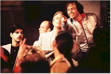
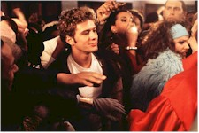

Contents | Features | Reviews | News | Archives | Store |
 |
|
| Movie Credits | Buy It! |
54
Review by Sean Axmaker
Posted 28 August 1998
| Written and Directed by Mark Christopher Starring
Ryan Phillippe, Salma Hayek, |
It sparkles, it dazzles, and it moves to the beat. Mark Christopher has captured the sights and sounds of the late 70s marvelously, a scintillating surface of noisy, sweaty, sexy fun. It’s a promising opening, but Christopher never gets past the party atmosphere. Would that 54 be as interesting, as spontaneous, or at least as flashily entertaining as the real club must have been on a good night in 1979.
We’ve seen this kind of flashback melodrama before, better and all too recently in Boogie Nights. There we had a shy stud from the LA suburbs who crashes the porno industry, finds his foster family in a the close knit crew, becomes a star, and loses his innocence and his stability in a haze of sex and drugs. In 54 Ryan Phillippe is New Jersey rube Shane O’Shea who crashes the disco Mecca, finds a foster family in a couple of fellow working stiffs from the club, becomes a local star and loses his innocence in a haze of drugs and sex. Well, sort of.
Writer/director Mark Christopher constructs the film as a remembrance narrated by Shane, a working class kid from New Jersey hanging out with his pals in crummy bars seeing the same faces every day and every night. He’s restless and frustrated and stares dreamily at the bright lights and big city across the Hudson until one night he decides to hit Studio 54, the most glamorous club in Manhattan. Sporting a new permanent and what he must think is a slick polyester shirt, he somehow gets the nod (his working class pals are forbidden to pass) and enters the center of the New York night life universe where sex, celebrity, and all night energy give him a buzz better than drugs. Shane is an Alice who’s found his own personal Wonderland, though perhaps a Wizard of Oz reference is more in order. After all, 54 is nothing without it’s resident wizard.
Mike Myers’ Steve Rubell is the Brooklyn boy made glam. Reigning over his party kingdom with a Fran Drescher-on-Quaaludes purr, he’s the master of ceremonies to an all American cabaret for the late seventies, except the show is on the floor and he knows it. Casting from the beautiful people and famous folk auditioning for a role in carefully managed nightly event, Rubell treats his club like a movie in progress, the world’s biggest private party as spectacle. In a dowdy make-over even more elaborate than his Austin Powers gig, Myers resembles a sleepy-eyed, paunchy Fagin, a homely, middle-aged man with enough confidence and chutzpah to make himself attractive through sheer power and charm.
Shane lands a job as a busboy through the friend of a friend and makes the club his life, moving in with a sweet couple who has been helping him navigate through the foreign social territory, busboy Greg (Breckin Meyer) and coat check girl Anita (Salma Hayeck). They’re a happily married couple hoping to make their dreams come true through the club: she’s an aspiring singer hoping to make a contact through the club’s connected guest list, and he wants to be a bartender, where the big money is made supplying patrons with party favors: cocaine, uppers, ecstasy, whatever happens to be the drug of the moment. Other 54 faces include Disco Dottie (Ellen Albertini Dow, last seen rapping in The Wedding Singer), a pill popping senior citizen who parties every night with kids old enough to be her grandchildren, club bookkeeper Viv (Sherry Stringfield in a part that feels lost to editing room shenanigans), fashion storm-trooper Marc the Doorman (Daniel Lapine), well connected society dame Billie Auster (Sela Ward), and the parade of celebrities that glide through the club on a nightly basis.
Through the good graces of Rubell (who knows a sweet piece of meat when he sees it) Shane begins to make an impression on the club patrons with his hunky good looks and wide-eyed wonder -- the kid never loses his naiveté, even after his initiation into the world of drugs and easy sex. He’s ‘Shane 54,’ a celebrity in the insular little world of the club and its regulars, and he thinks he’s really made it.
And here is where the film begins to falter. Shane gravitates towards the decadence and glamour of 54 but never seems to catch on to the real barriers between the chic patrons and himself. "Other clubs kept the help away from the customers; here they flaunted the help," he muses in voice over, little realizing he’s just another member of the chorus line. When glamorous Billy Auster (Sela Ward), a decadent society woman who gleefully slums in the club, invites Shane and Anita to dinner it’s obvious she doesn’t realize just how provincial and naïve our gullible young hero is. The high society guests turn slick sounding small talk into nasty insults lobbed so far above his head he takes them all as compliments. They become objects of derision and it takes Anita to clue him in. This is when, in all seriousness, he relates to us how he first realized just how far he had to go. This seems to be the turning point for Shane, the moment he’s ready to cultivate the manners and speech of the beautiful people he so innocently longed for in his New Jersey days. It goes nowhere.
Like so many other promising threads, Christopher leaves it dangling. Shane doesn’t merely forget about his desire to learn how to move in social circles, he acts like it never even occurred to him. Shane simply doesn’t change in the film -- for better, for worse, for anything, he’s a completely static character. One day he decides he done enough drugs and Bam!, they’re gone. He’s suddenly fed up with cheap sex and sleazy schmoozing and Bam!, it’s over. Shane extricates himself so easily from what had been his entire life that it’s like he was never really there.
The only real drama comes from the wizard himself Steve Rubell, a conniving, manipulative, avaricious character whose identity and ego becomes so caught up in the club and his own celebrity that his fall becomes far more affecting than any of Shane’s halfhearted dramas. Meyers’ charm and style carves out a Rubell we can believe in. "Steve could be a real rat bastard," voices Shane, and we know it, but he’s a bastard with panache. In an early scene he puts the make on Greg, a straight, happily married guy just itching for that bartender job. Rubell is drugged to the gills and horny as hell, but he’s still sly enough to play it subtle: quiet little pleadings, a hint about a promotion, a nod and a smile. Meyers plays the scene like a master: even completely messed up he’s the king of his world.
54 never lives up to the promise of the early scenes, and for all the offhand presentation of drug use and casual sex, remains a clumsily moralistic movie. The whole concept of the culture of celebrity is dropped in the light of the more obvious story of the club’s (and by extension the decade’s) rise and fall: decadence pushed to the point of overdose. Christopher handles it with all the aplomb of jingle writer, winding it up in arch statements, facile observations, and easy outs for the characters. It may not be completely his fault; at a mere 93 minutes the film feels like the victim of post-production tampering and the Weinsteins have a reputation for cutting their films down. As one observer commented, Miramax is not a "gay friendly" studio (which may explain why Rubell’s private life all but evaporates after his initial attempted seduction of busboy Greg). If that’s the case then the Weinsteins’ operation left the patient without a heart. 54 starts out as an exploration of a culture based on the cultivation of surfaces, and winds up all surface itself.
Contents | Features | Reviews | News | Archives | Store
Copyright © 1999 by Nitrate Productions, Inc. All Rights Reserved.